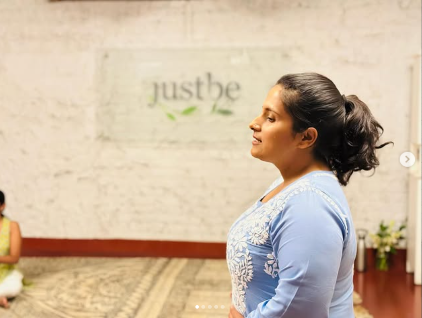

About
Aatman means the self — the part of you that already knows
I'm Nupur. Aatman began as my own search for language, and became a practice of holding that search for other people.

I did not arrive at this work through certainty. I arrived through a long stretch of years where I was functioning well on the outside and quietly unsure on the inside — good at holding others, unpractised at being held.
Tarot came first, almost by accident: a deck, a friend, a question I had been avoiding. What struck me was not prediction but recognition — the way an image can say the thing you had been talking around for months. Counselling training came after, to give that recognition structure, ethics and care.
Aatman is where those two meet. Sessions are one-to-one, unhurried and private. We start where you actually are, not where you think you should be. Sometimes we work with cards. Sometimes we just talk, and breathe, and let the room be quiet for a moment.
Alongside individual work, I hold small group circles and gentle sessions for people who want to begin softly. Everything here is built on the same belief: you are not a problem to be solved.
See the offeringsWhat Aatman stands for
The cards don't decide
Tarot is a language for what you already sense. It opens the conversation; you keep the authorship of your life.
Nothing is diagnosed here
This is counselling and reflection, not clinical treatment. Where deeper care is needed, you'll be told honestly.
Confidence, always
What is said in a session stays in the session. No names, no stories retold, ever.
Softness is not vagueness
You'll be met gently and still leave with something specific to do, feel, or let go of.

The approach, in one line
Listen closely, reflect honestly, and leave you with something you can actually carry into Monday morning. No mystique for its own sake, no advice you didn't ask for.
Write to Nupur